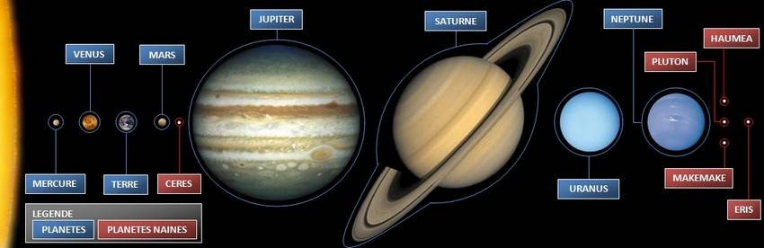
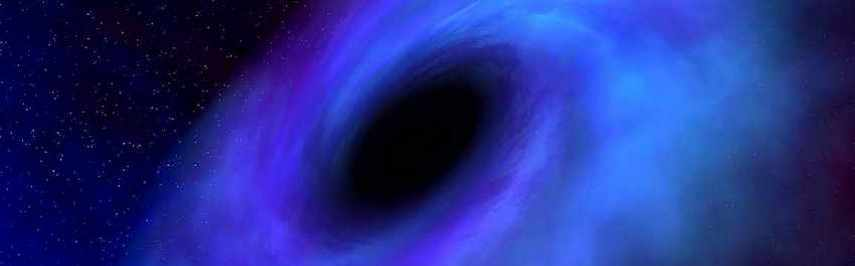

presentation
1 - LES PLANETES
L’Union Astronomique Internationale a décidé à une large majorité (70% des 2 500 participants), lors de l'assemblée
générale réunie à Prague le jeudi 24 août 2006, que Pluton ne serait plus considérée comme une planète du Système Solaire.
Donc, à partir d'aujourd'hui, le Système Solaire ne compte plus que huit planètes.
Désormais, une planète est définie comme un objet :
-En orbite autour d'une étoile, sans toutefois être une étoile.
-Suffisamment massif pour que l'effet de sa propre gravité lui confère une enveloppe sphérique.
-Dominant son environnement et ayant « dégagé le voisinage autour de son orbite » : ce qui n'est pas le cas de Pluton.
Il faudra dorénavant classer les objets du Système Solaire en trois catégories :
-les planètes : Mercure, Venus, la Terre, Mars, Jupiter, Saturne, Uranus et Neptune ;
-les planètes naines : les premiers inscrits étant Cérès, Pluton, Haumea, Makemake et Éris ;
-les petits corps du Système Solaire (objets ne rentrant pas dans les deux premières catégories).
Nouvelle classification
Histoire
L'idée d'un système solaire, regroupant les différents corps célestes les plus liés physiquement à la Terre, et où le Soleil occupe une position centrale - système qui de fait, dans la hiérarchie de l'univers, constitue la structure locale dans laquelle évoluent les observateurs terrestres -, n'a été clairement dégagée qu'après des siècles d'observation et d'analyse. Pour y parvenir, il a fallu distinguer différentes sortes d'astres (en mouvement ou immobiles sur la sphère céleste, proches ou distants, lumineux par eux-mêmes, etc.), concevoir que la Terre était un astre parmi d'autres, comprendre les mouvements relatifs des corps célestes. Cette évolution s'est essentiellement traduite par le passage du géocentrisme (où la Terre est conçue comme le centre orbital du système) à l'héliocentrisme (où le Soleil est le centre orbital du système). Durant une période qui va du VIe siècle av. J.-C. à la Renaissance, on assiste, malgré ses insuffisances, au triomphe du géocentrisme, dont le dernier grand théoricien sera Claude Ptolémée (vers 140), lequel développe la théorie des épicycles, dans laquelle les mouvements apparents observés sur la sphère céleste sont expliqués par un mouvement de chaque astre autour d'un centre orbital (géométrique) qui se compose avec un mouvement du centre orbital autour de la Terre. Bien que l'héliocentrisme ait été développé dès le IIIe siècle av. J.-C., par Aristarque de Samos, il faut attendre les travaux de Nicolas Copernic (1530) pour que cette conception commence à s'affirmer comme l'interprétation la plus cohérente et la plus efficace des observations les plus précises d'alors, et permette le développement de l'astronomie moderne. L'adoption de l'héliocentrisme a non seulement bouleversé la conception philosophique du monde, puisqu'elle remettait en cause la place de la Terre, donc celle de l'homme, dans la nature, mais elle a également modifié les notions de système et de loi physiques, en les faisant sortir du domaine restreint de la physique terrestre. Et Johannes Kepler, en fondant la mécanique céleste, préparera l'édification de la physique universelle.
**********************************
2 - Le système solaire dans son ensemble
L'étude du système solaire présente un intérêt considérable pour l'astronomie et pour l'astrophysique, car, alors que l'on commence à observer des planètes extrasolaires, il s'agit du seul système planétaire connu et, par surcroît, accessible à l'exploration directe, permettant de recueillir des matériaux formés il y a plusieurs milliards d'années ; le système solaire constitue donc un banc d'essai incomparable pour diverses théories concernant l'évolution ou la structure dynamique de la matière stellaire. Par ailleurs, l'étude des autres planètes est fondamentale pour la connaissance de la Terre, y compris pour la compréhension de la formation et du développement de la matière vivante. Cet intérêt est à l'origine de l'envoi de plus de cinquante sondes spatiales, dont les trajectoires ont été programmées pour réaliser des rendez-vous avec différents objets (planètes, satellites) - sous la forme de survols, de mises en orbite ou d'atterrissages. Le système solaire est formé d'un astre, le soleil, autour duquel gravitent des planètes des astéroïdes et des comètes. Les planètes sont des astres éteints. Au nombre de 8 (Pluton n'étant plus une planète depuis le 24 août 2006), certaines possèdent leur(s) propre(s) satellite(s).
La cosmogonie du système solaire
Malgré les possibilités d'observation directe de l'état physique et de la composition chimique du système solaire, les mécanismes de sa formation n'ont pu encore être réellement élucidés. D'une part, il s'agit de déterminer si le Soleil et son cortège planétaire se sont formés simultanément (ou non) à partir de la nébuleuse primitive. D'autre part, il s'agit de déterminer les mécanismes de condensation qui ont abouti à la différenciation actuelle des constituants du système. De la nébuleuse primitive aux protoplanètes L'état actuel des connaissances ne permet que d'esquisser des schémas évolutifs plausibles, parmi lesquels figure le suivant, qui s'inscrit dans un schéma d'évolution stellaire classique. Tout d'abord, un nuage de matière interstellaire atteint un état critique (perturbation ou mécanisme régulier) où s'amorce sa contraction. Ce nuage, tournant sur lui-même, possédant un champ magnétique interne, contenant des masses de plasma, est le siège d'interactions entre forces gravitationnelles, centrifuges, thermiques et magnétiques ; il se contracte en s'échauffant, en accélérant sa rotation, et s'aplatit en un disque nébulaire. Autour du centre de gravité se développe une condensation protostellaire massive, qui attire à elle la plus grande partie (99 %) de la matière du nuage (essentiellement de l'hydrogène et de l'hélium). Le disque nébulaire, quant à lui, se refroidit, s'amincit et se rétrécit, en prenant une structure annulaire où apparaît une condensation équatoriale de corpuscules plus denses (poussières, cristaux, glaces, corps rocheux, etc.), animés de mouvements chaotiques sur des orbites très variées.
La création des planètes
Lorsque les grains ne vont pas trop vite et se percutent, ils forment des planétoïdes. Ce sont en fait de petits astres qui tournent sur orbite autour d'une étoile, dans notre cas l'étoile est le soleil. Puis, ils s'assemblent entre-eux et forment une planète. Pour qu'une planète naisse, il faut compter entre 50 et 100 millions d'années.

A cette période, le système solaire est pratiquement terminé. En effet, le proto-soleil est devenu soleil à part entière puisqu'il a atteint la température qui lui permet de mettre en place son mécanisme nucléaire. Les planètes sur leur orbite attirent les derniers planétoïdes ou poussières et les plus éloignées du soleil captent les gaz les plus légers tels que l'hydrogène H ou l'hélium He et deviennent des planètes gazeuses (dans cette catégorie on retrouve Jupiter, Saturne, Uranus et Neptune). Au contraire, les plus proches du soleil ont plus de difficultés à garder leur atmosphère car le soleil attire les éléments légers. Elles ont alors un noyau dur et peu ou pas d'atmosphère: ce sont les planètes telluriques (Mercure, Vénus, Terre, Mars).
Enfin, il reste le cas de Pluton qui est probablement un ancien satellite de Neptune (rappel : Pluton n'est plus une planète depuis le 24 août 2006).
Par ailleurs, on remarque que le nombre de satellites naturels que possède chaque planète varie avec la distance au soleil. Ainsi, plus la planète est loin du soleil et de son attraction, plus elle a de chance de posséder de satellites. De ce fait, on remarque que Vénus n'a aucun satellite, la Terre n'en a qu'un seul (la Lune), Mars en a deux et a l'opposé, Jupiter en possède 63.
C'est ainsi qu'est apparu notre système solaire actuel.